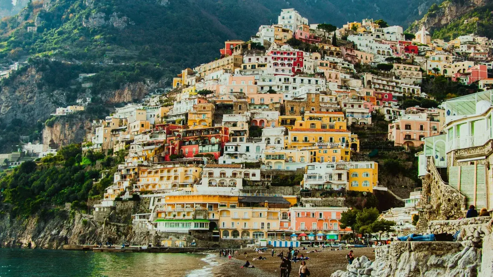

The short answer
Take a high-speed train to Salerno (about 2 hours from Rome) and continue by ferry to Amalfi and Positano, which run roughly from spring to autumn. In winter, or on rough-sea days, use the SITA buses along the coastal road. Sleep in Amalfi: it is the hub for both ferries and buses, and Ravello is 25 minutes away by bus. A car is a burden here: narrow roads, few and very expensive parking spaces, and in peak months traffic restrictions for non-residents.
How to get there
- Via Salerno (best for Amalfi and Ravello): high-speed trains from Rome, Florence and Milan stop at Salerno. The ferry pier (Molo Manfredi / Piazza della Concordia) is a short walk from the station. Compare trains to Salerno.
- Via Naples and Sorrento (best for Positano): train to Napoli Centrale (about 1h10 from Rome), then the Circumvesuviana local train to Sorrento (about 1h10, often crowded) and the SITA bus to Positano. From Naples there are also direct ferries to Sorrento, and in season to Positano and Amalfi.
- From Naples airport (NAP): direct buses go to Sorrento and, in summer, to Positano and Amalfi; otherwise take the Alibus to the station.
Ferries: the nicest way to travel
Ferries link Salerno, Amalfi, Positano and, in some periods, Sorrento, Capri and Naples. They avoid the coastal road traffic and give you the best view of the villages. The main season runs from about April to October; schedules are reduced at the edges of the season and boats can be cancelled with rough sea. Buy tickets at the pier kiosks or online from the operators, and arrive 20 minutes early in summer.
| Route | Ferry (approx.) | Bus (approx.) |
|---|---|---|
| Salerno → Amalfi | 35 min | 1h15 |
| Amalfi → Positano | 25 min | 50 min |
| Sorrento → Positano | Seasonal | 45–60 min |
| Amalfi → Ravello | — | 25 min |
SITA buses: cheap but crowded
The blue SITA Sud buses run along the coastal road between Sorrento, Positano, Amalfi and Salerno, with a branch up to Ravello. Buy tickets before boarding (bars, tobacconists, newsagents, or the official app) and validate them on board. In summer buses are often full and may skip stops: leave early and sit on the right side from Sorrento to Amalfi for the sea view. If you get car-sick, the ferry is kinder.
Where to stay
| Base | Good for |
|---|---|
| Amalfi | The hub: ferries and buses in every direction, Ravello close by |
| Positano | The most iconic view, but expensive and full of steps |
| Sorrento | Cheaper, train to Naples and Pompeii, ferries to Capri |
| Salerno | Budget base on the high-speed line, ferry to Amalfi |
Hotels on the coast fill up months ahead for June–September: compare hotels in Amalfi early or look at Sorrento and Salerno.
A simple 2-day plan
- Day 1: ferry from Salerno to Amalfi, the cathedral, lunch, then the bus up to Ravello (Villa Rufolo and Villa Cimbrone) for the afternoon.
- Day 2: morning ferry to Positano, beach and alleys, or the Path of the Gods hike (from Bomerano to Nocelle, about 3 hours, then steps down to Positano). Back to Amalfi by ferry in the late afternoon.
Tips
- Coming from Rome? See Fiumicino airport to Rome and Trenitalia vs Italo.
- Before your travel day, check for train strikes.
- Still want to drive part of the trip? Read Car rental in Italy and ZTL zones, and return the car before the coast.
- Pack light: in Positano and Amalfi almost every hotel is up a flight of steps.
Times, prices and rules are indicative and can change — always check before you travel.
Checked against official sources. Rules and prices change: always confirm on these sites before you travel.
Plan your Amalfi Coast trip
Some links are affiliate links: booking through them costs you nothing extra and helps keep 687 free.
The coast, without the stress.
In 687 Italy the Amalfi stage gets the train to Salerno or Naples, the next steps by ferry or bus and the offline maps for the villages. If the sea is rough and a ferry is cancelled, NOW rebuilds the day with the bus.
Sources
Checked against these official sites in November 2026. Prices and rules can change: always confirm before you travel.